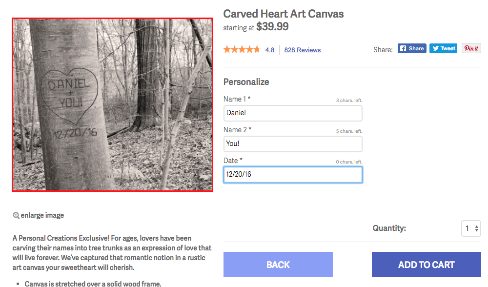
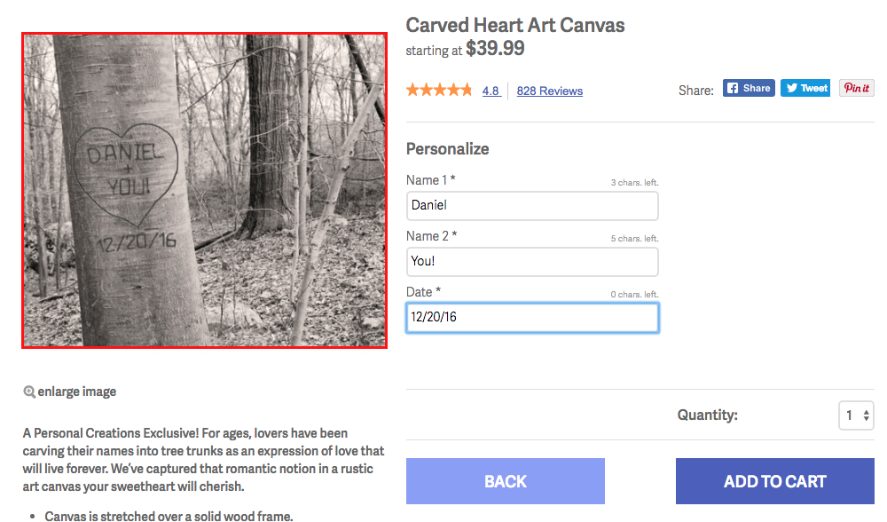
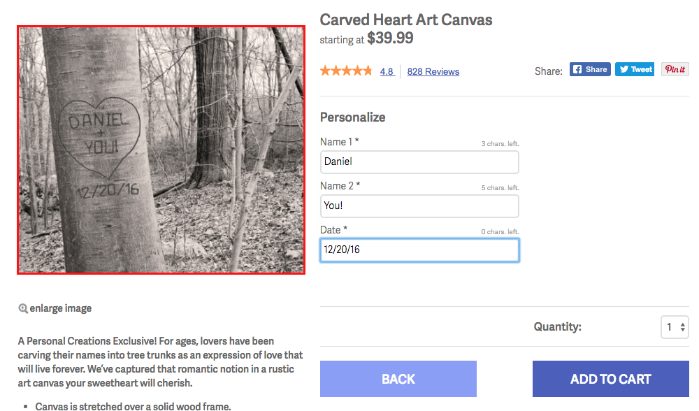
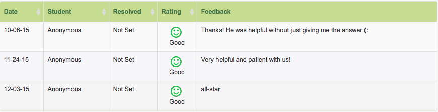
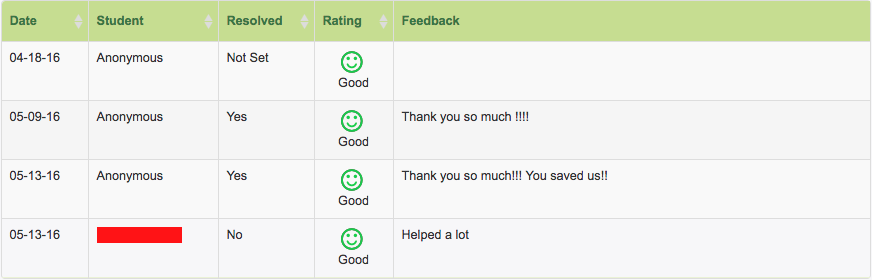

Experiences
Teradata -- System Integration Test Engineer
Mar. 2017 - Present
- Developed a system analytic tool to diff system configurations at individual query level
- Developed an internal logging library that is compatible with all Teradata products
- Introduced Docker and Ansible to automate the full CI cycle including nightly system upgrade, daily Jenkins builds with varying configs, and conditional Artifactory updates
- Developed a NN algorithm that suggests test parameters that would maximize stress/resource usage on any given system without busting it
- Developed an internal SQL query generator tool that constructs random complex queries based on grammar files and result conditions filter
FTD Companies -- Software Engineer Intern
Jun. 2015 - Sep. 2015
- Used Selenium WebDriver to construct a tester program for every brand website, allowing testing cycle to be shorter and more reliable
- Developed a custom image preview function that merges product image with user’s customization image to preview fully customized product before purchase using Adobe Scene 7 API show example 
- Reconstructed several brand websites with Backbone.js and mustache template for better reliability

 

Teaching
Sep. 2015 - Sep. 2016
- CSE 8B - Introduction to Computer Science: Java II show feedback
- CSE 30 - Computer Organization and Systems Programming
- CSE 100 - Advanced Data Structures show feedback  

Android Apps
SmallTalk
- Incorporates Bing Search API and GPS data to display news articles ordered by local popularity
- Uses DigitalOcean server and MySQL to communicate with the API and to manage popularity data
- Microsoft Sponsor Award at HackMIT
Restarun
- Displays one restaurant at a time, in order that the user would be most interested in, determined by basic Machine Learning algorithms such as Gradient Descent on linear regression
- Uses Facebook SDK for user profile; GPS and Yelp API for nearby restaurant data
Websites
Course projects
- Simple router for UDP/TCP protocol with ICMP support
- Sliding Window Protocol
- (ROS) Mobile robot localization using particle filters and Kalman filter
- (ROS) Deterministic and stochastic path planning using A*, MDP, and Q-learning
- Parallel SSE-vectorized Cardiac Electrophysiology Simulation using Aliev-Panfilov model
- (System Verilog) 5-stage pipelined processor with branch prediction
- Bot that finds all valid words on any size boggle board
- Huffman code compressor / de-compressor
- Network planning with shortest path using Prim’s and Dijkstra’s algorithms
- Traveling Salesman Problem heuristic solver using Christofides’ and 2-opt algorithms